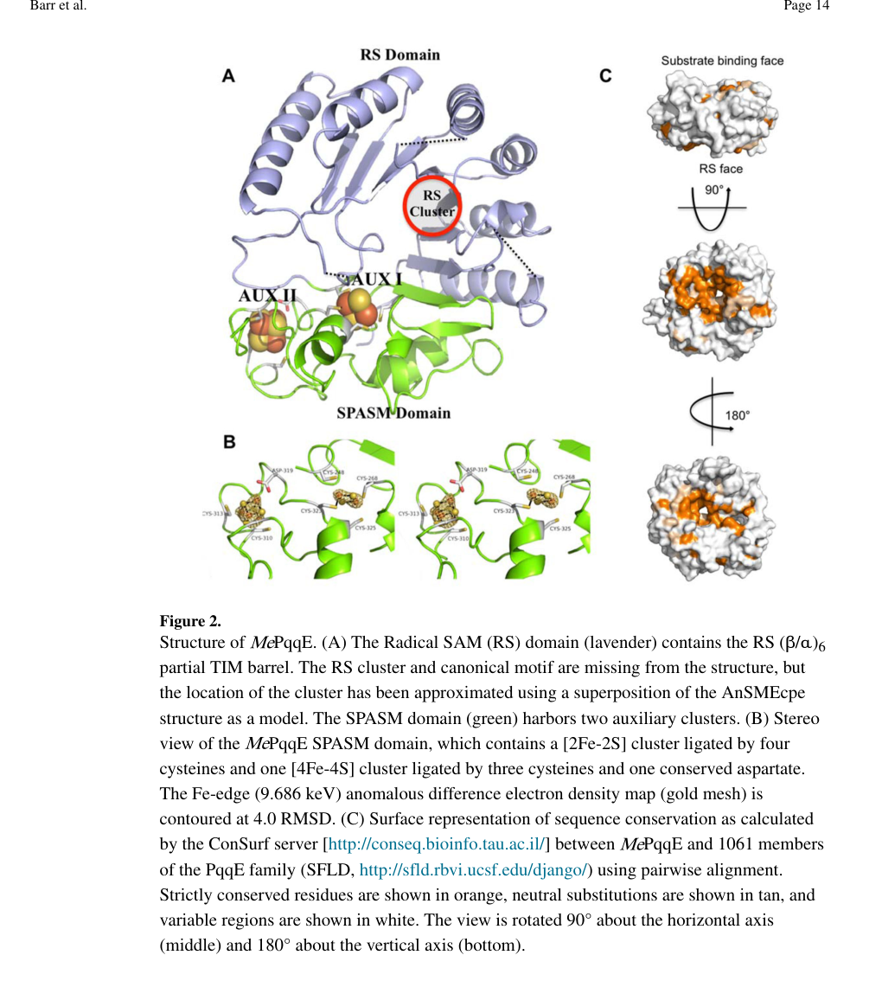

pqqE (PP_0376) encodes the radical-SAM/RS-SPASM PqqA peptide cyclase that initiates pyrroloquinoline quinone (PQQ) biosynthesis by catalyzing the first committed step, formation of an intramolecular carbon-carbon cross-link between a conserved glutamate and a tyrosine residue in the ribosomally synthesized PqqA precursor peptide (EC 1.21.98.4). The enzyme uses a SAM-cleaving [4Fe-4S] radical-SAM cluster plus auxiliary SPASM-domain Fe-S clusters, and productive turnover requires the peptide chaperone PqqD, which presents PqqA to PqqE as a ternary PqqA-PqqD-PqqE complex. Its core function is cytosolic PqqA peptide cyclization with required SAM and Fe-S cofactors.
Definition: Catalysis of radical-SAM-dependent formation of an intramolecular carbon-carbon cross-link between glutamate and tyrosine residues in the PqqA precursor peptide during pyrroloquinoline quinone biosynthesis.
Justification: GO:0009975 cyclase activity is the best available current molecular-function term, but PqqE catalyzes a specific PqqA peptide cross-linking reaction that is not captured by a dedicated GO term. The proposed activity corresponds to EC 1.21.98.4 and is supported by the PqqE/PqqD radical-SAM biochemical evidence in PMID:26961875 and by the deep research synthesis.
Parent term: cyclase activity
Supporting Evidence:
| GO Term | Evidence | Action | Reason |
|---|---|---|---|
|
GO:0003824
catalytic activity
|
IEA
GO_REF:0000002 |
MARK AS OVER ANNOTATED |
Summary: This very broad catalytic activity annotation is true but not useful for PqqE because the record already has the more informative cyclase activity and pathway annotations.
Reason: Retain the specific cyclase and cofactor-binding terms instead of emphasizing generic catalytic activity. Deep research confirms PqqE has a precise, well-characterized radical-SAM peptide cyclase activity that is far more informative than the root catalytic term.
Supporting Evidence:
file:PSEPK/pqqE/pqqE-goa.tsv
GO:0003824 catalytic activity
file:PSEPK/pqqE/pqqE-uniprot.txt
RecName: Full=PqqA peptide cyclase
|
|
GO:0005506
iron ion binding
|
IEA
GO_REF:0000104 |
KEEP AS NON CORE |
Summary: Iron ion binding is directionally correct for a radical-SAM [4Fe-4S] enzyme, but it is less specific than the 4 iron, 4 sulfur cluster binding annotation. Deep research shows PqqE binds multiple Fe-S clusters (the SAM-cleaving RS cluster plus auxiliary SPASM clusters), so the iron-sulfur cluster terms capture the cofactor more precisely than bare iron ion binding.
Reason: Keep as a broad cofactor-binding annotation while treating GO:0051539 as the informative core cofactor term.
Supporting Evidence:
file:PSEPK/pqqE/pqqE-uniprot.txt
[4Fe-4S] cluster
file:PSEPK/pqqE/pqqE-goa.tsv
GO:0005506 iron ion binding
file:PSEPK/pqqE/pqqE-deep-research-falcon.md
PqqE belongs to the **RS-SPASM subfamily**, characterized by additional Fe–S clusters in a C-terminal SPASM domain
|
|
GO:0009975
cyclase activity
|
IEA
GO_REF:0000104 |
ACCEPT |
Summary: Cyclase activity is the best available current molecular-function term for PqqE. UniProt names the protein PqqA peptide cyclase and describes cross-link formation in PqqA. Deep research independently confirms PqqE is the initiating radical-SAM/SPASM peptide cyclase that forms the first intramolecular C-C cross-link in the PqqA precursor between a conserved glutamate and tyrosine.
Reason: A more specific PqqA peptide cyclase term would be preferable (see proposed_new_terms), but GO:0009975 captures the core catalytic category and is strongly supported by both primary biochemical work and the deep research synthesis.
Supporting Evidence:
file:PSEPK/pqqE/pqqE-uniprot.txt
RecName: Full=PqqA peptide cyclase
file:PSEPK/pqqE/pqqE-uniprot.txt
Catalyzes the cross-linking of a glutamate residue and a
file:PSEPK/pqqE/pqqE-goa.tsv
GO:0009975 cyclase activity
PMID:26961875
PqqE, in conjunction with PqqD, carries out the first step in PQQ biosynthesis
file:PSEPK/pqqE/pqqE-deep-research-falcon.md
PqqE is the initiating enzyme
file:PSEPK/pqqE/pqqE-deep-research-falcon.md
formation of a new intramolecular carbon–carbon bond within PqqA between a conserved glutamate and tyrosine
|
|
GO:0018189
pyrroloquinoline quinone biosynthetic process
|
IEA
GO_REF:0000120 |
ACCEPT |
Summary: This process annotation is correct. PqqE catalyzes the first committed PqqA peptide cross-linking step in pyrroloquinoline quinone biosynthesis. Deep research confirms PqqE is one component of the conserved pqqA-E operon and acts as the pathway's initiating radical-SAM cross-linking enzyme.
Reason: PqqE is a core enzyme of the PQQ pathway, catalyzing the initiating committed step.
Supporting Evidence:
file:PSEPK/pqqE/pqqE-uniprot.txt
tyrosine residue in the PqqA protein as part of the biosynthesis of
file:PSEPK/pqqE/pqqE-goa.tsv
GO:0018189 pyrroloquinoline quinone biosynthetic process
PMID:26961875
PqqE, in conjunction with PqqD, carries out the first step in PQQ biosynthesis
file:PSEPK/pqqE/pqqE-deep-research-falcon.md
catalyzing the first committed chemical transformation
|
|
GO:0046872
metal ion binding
|
IEA
GO_REF:0000002 |
MARK AS OVER ANNOTATED |
Summary: Metal ion binding is too generic for PqqE. The biologically meaningful metal cofactor is the [4Fe-4S] radical-SAM cluster (plus auxiliary SPASM Fe-S clusters).
Reason: Prefer GO:0051539 4 iron, 4 sulfur cluster binding. Deep research confirms the functionally relevant metal centers are iron-sulfur clusters, not generic mononuclear metal ions.
Supporting Evidence:
file:PSEPK/pqqE/pqqE-uniprot.txt
[4Fe-4S] cluster
file:PSEPK/pqqE/pqqE-goa.tsv
GO:0046872 metal ion binding
|
|
GO:0051536
iron-sulfur cluster binding
|
IEA
GO_REF:0000002 |
KEEP AS NON CORE |
Summary: Iron-sulfur cluster binding is correct but less specific than the 4 iron, 4 sulfur cluster binding annotation that matches the radical-SAM cofactor. Deep research describes the RS [4Fe-4S] cluster plus auxiliary SPASM clusters (an unusual AuxI [2Fe-2S] and an AuxII [4Fe-4S]), so the generic iron-sulfur term remains a useful parent covering all of these.
Reason: Retain as a broad parent while treating GO:0051539 as the core cofactor term. It usefully covers the auxiliary [2Fe-2S] cluster that GO:0051539 alone does not.
Supporting Evidence:
file:PSEPK/pqqE/pqqE-uniprot.txt
[4Fe-4S] cluster
file:PSEPK/pqqE/pqqE-goa.tsv
GO:0051536 iron-sulfur cluster binding
file:PSEPK/pqqE/pqqE-deep-research-falcon.md
AuxII:** a **[4Fe–4S]** cluster ligated by **3 Cys + 1 Asp
|
|
GO:0051539
4 iron, 4 sulfur cluster binding
|
IEA
GO_REF:0000002 |
ACCEPT |
Summary: This is the appropriate cofactor-binding annotation for PqqE. The protein is a radical-SAM enzyme with a SAM-cleaving [4Fe-4S] cluster (and an additional auxiliary [4Fe-4S] cluster in the SPASM domain). Deep research confirms the RS [4Fe-4S] cluster reductively cleaves SAM to generate the 5'-deoxyadenosyl radical that initiates catalysis.
Reason: The [4Fe-4S] cluster is mechanistically central to radical-SAM peptide cross-linking.
Supporting Evidence:
file:PSEPK/pqqE/pqqE-uniprot.txt
[4Fe-4S] cluster
file:PSEPK/pqqE/pqqE-goa.tsv
GO:0051539 4 iron, 4 sulfur cluster binding
file:PSEPK/pqqE/pqqE-deep-research-falcon.md
One-electron reduction of the RS [4Fe–4S] cluster enables SAM cleavage to methionine + 5′-dAdo•
|
|
GO:1904047
S-adenosyl-L-methionine binding
|
IEA
GO_REF:0000104 |
ACCEPT |
Summary: S-adenosyl-L-methionine binding is appropriate for PqqE because radical-SAM chemistry uses SAM to generate the radical species required for peptide cross-linking. Deep research confirms the RS [4Fe-4S] cluster reductively cleaves SAM to methionine plus the 5'-deoxyadenosyl radical that abstracts a hydrogen from the PqqA glutamate side chain.
Reason: SAM binding is a mechanistically relevant cofactor interaction for the core enzyme activity.
Supporting Evidence:
file:PSEPK/pqqE/pqqE-uniprot.txt
S-adenosyl-L-methionine
file:PSEPK/pqqE/pqqE-goa.tsv
GO:1904047 S-adenosyl-L-methionine binding
file:PSEPK/pqqE/pqqE-deep-research-falcon.md
it uses a **[4Fe–4S] cluster** to reductively cleave **S-adenosyl-L-methionine (SAM)** to generate a **5′-deoxyadenosyl radical
|
Q: Which PqqE radical-SAM intermediates can be observed during PqqA Glu-Tyr cross-link formation in KT2440?
Experiment: Purify PqqE with reconstituted [4Fe-4S] cluster and assay SAM-dependent cross-linking of synthetic or recombinant PqqA peptide by LC-MS/MS, with and without PqqD, using a physiological flavodoxin/FNR/NADPH electron-delivery system.
Hypothesis: PqqE initiates PQQ biosynthesis by radical-SAM cross-linking of PqqA, and this requires the PqqD chaperone.
Type: in vitro radical-SAM enzyme assay
The research report should be a detailed narrative explaining the function, biological processes, and localization of the gene product. Citations should be given for all claims.
You should prioritize authoritative reviews and primary scientific literature when conducting research. You can supplement
this with annotations you find in gene/protein databases, but these can be outdated or inaccurate.
We are specifically interested in the primary function of the gene - for enzymes, what reaction is catalyzed, and what is the substrate specificity? For transporters, what is the substrate? For structural proteins or adapters, what is the broader structural role? For signaling molecules, what is the role in the pathway.
We are interested in where in or outside the cell the gene product carries out its function.
We are also interested in the signaling or biochemical pathways in which the gene functions. We are less interested in broad pleiotropic effects, except where these elucidate the precise role.
Include evidence where possible. We are interested in both experimental evidence as well as inference from structure, evolution, or bioinformatic analysis. Precise studies should be prioritized over high-throughput, where available.
The UniProt target (Q88QV8; gene pqqE, locus PP_0376) is annotated as PqqA peptide cyclase / coenzyme PQQ biosynthesis protein E and a member of the radical S-adenosylmethionine (radical SAM; rSAM) RS-SPASM enzyme family. The most direct mechanistic evidence available in the retrieved literature is from experimentally characterized PqqE homologs (not explicitly labeled as P. putida KT2440/Q88QV8 within the retrieved corpus). Nevertheless, the defining functional properties—rSAM-mediated C–C cross-link formation in PqqA requiring PqqD and auxiliary Fe–S clusters—are consistent across authoritative primary papers and reviews, and they match the UniProt-provided family/domain assignment for Q88QV8 (RS-SPASM with auxiliary Fe–S clusters). (zhu2018methodsforexpression pages 1-4, latham2017attheconfluence pages 1-2, barr2018xrayandepr pages 1-3)
PQQ is a peptide-derived redox cofactor made from a short ribosomally produced precursor peptide (PqqA) that is post-translationally modified by dedicated enzymes, including PqqE and PqqD. In this conceptual framework, PQQ biosynthesis resembles ribosomally synthesized and post-translationally modified peptide (RiPP) pathways: a genetically encoded precursor peptide is “tailored” by specialized enzymes to generate a small-molecule product. (latham2017attheconfluence pages 1-2)
PqqE is the initiating enzyme in the PQQ pathway, catalyzing the first committed chemical transformation: formation of a new intramolecular carbon–carbon bond within PqqA between a conserved glutamate and tyrosine (often described as coupling the glutamate side-chain carbon to an aromatic carbon of tyrosine). (barr2016demonstrationthatthe pages 6-7, zhu2018methodsforexpression pages 1-4, barr2018xrayandepr pages 1-3)
PqqE is a radical SAM enzyme, meaning it uses a [4Fe–4S] cluster to reductively cleave S-adenosyl-L-methionine (SAM) to generate a 5′-deoxyadenosyl radical (5′-dAdo•) that initiates substrate radical chemistry. (latham2017attheconfluence pages 1-2, zhu2018methodsforexpression pages 1-4, barr2018xrayandepr pages 1-3)
PqqE belongs to the RS-SPASM subfamily, characterized by additional Fe–S clusters in a C-terminal SPASM domain. Structural/spectroscopic characterization in a homolog shows PqqE contains:
- RS cluster: [4Fe–4S] (SAM-binding/cleaving)
- AuxI: an unusual [2Fe–2S] cluster in the SPASM domain
- AuxII: a [4Fe–4S] cluster ligated by 3 Cys + 1 Asp (Asp ligand)
These features are depicted in the structural figures (domain architecture, ligand geometry, and topology schematic). (barr2018xrayandepr pages 1-3, barr2018xrayandepr pages 6-8, barr2018xrayandepr media 0e376f62)
PqqE catalyzes de novo intrapeptide C–C cross-linking within PqqA. The experimentally observed modification produces a −2 Da mass shift in PqqA consistent with formation of a new bond and net loss of two H atoms (re-aromatization step). (barr2016demonstrationthatthe pages 4-6)
MS/MS evidence supports cross-linking in the region consistent with a Glu15–Tyr19 linkage (position numbering in the studied PqqA substrate). (barr2016demonstrationthatthe pages 6-7)
PqqD is required for productive catalysis. In vitro assays show that omitting PqqD abolishes detectable PqqA modification. (barr2016demonstrationthatthe pages 4-6)
A quantitative interaction model has been established:
- PqqD binds PqqA tightly with KD ≈ 200 nM.
- PqqD binds PqqE with KD ≈ 12 µM (1:1 stoichiometry).
- The ternary PqqA–PqqD–PqqE complex forms with KD ≈ 5 µM (reported for binding to PqqE). (latham2015pqqdisa pages 1-2, latham2017attheconfluence pages 1-2)
Electron delivery conditions matter strongly: productive turnover required a physiological-style reductant system (flavodoxin/FNR/NADPH), whereas common chemical reductants (e.g., dithionite or Ti(III) citrate) failed under the reported conditions and can yield uncoupled SAM cleavage. (barr2016demonstrationthatthe pages 4-6, barr2016demonstrationthatthe pages 6-7)
A widely cited mechanistic model is:
1. One-electron reduction of the RS [4Fe–4S] cluster enables SAM cleavage to methionine + 5′-dAdo•.
2. 5′-dAdo• abstracts H from the glutamate side chain on PqqA, generating a peptide-centered radical.
3. Radical coupling to the tyrosine ring forms the new C–C bond.
4. Auxiliary SPASM clusters likely participate in controlled electron transfer/oxidation state management to complete the net oxidation required for cross-link formation.
This pathway-level and mechanistic description is supported by authoritative review discussion and primary biochemical demonstration. (latham2017attheconfluence pages 1-2, barr2016demonstrationthatthe pages 6-7, barr2018xrayandepr pages 1-3)
Structural/spectroscopic work provides strong evidence for distinct auxiliary clusters:
- AuxI: observed as [2Fe–2S], ligated by four cysteines.
- AuxII: observed as [4Fe–4S], ligated by three cysteines and an aspartate ligand (Asp319 in one homolog).
Mössbauer/EPR data also indicate mixed Fe–S populations (e.g., ~80% [4Fe–4S]2+ and ~20% [2Fe–2S]2+ in one preparation), reinforcing the presence of an atypical AuxI cluster state in PqqE. (barr2018xrayandepr pages 6-8)
The cluster architecture and ligand topology are shown directly in the published structural figures, including a schematic of ligand placement and an atomic view of cluster environments. (barr2018xrayandepr media 0e376f62, barr2018xrayandepr media c8b0798a)
Elemental analysis in the initial functional demonstration reported 13.0 ± 0.1 Fe and 12.2 ± 0.5 sulfides per polypeptide, consistent with an enzyme housing multiple Fe–S clusters (RS + auxiliary cluster(s)). (barr2016demonstrationthatthe pages 4-6)
Direct subcellular localization experiments for P. putida KT2440 Q88QV8 were not retrieved. However, because PqqE acts on a ribosomally synthesized intracellular peptide substrate (PqqA) and requires interaction with the intracellular chaperone PqqD, the most parsimonious localization for catalytic action is cytosolic, prior to subsequent processing steps that yield the diffusible cofactor PQQ. (latham2017attheconfluence pages 1-2, zhu2018methodsforexpression pages 1-4)
At the operon/pathway level, reviews emphasize a conserved pqq gene ordering (pqqA–E) across organisms, with optional inclusion of peptidase genes (e.g., pqqF in some taxa) and occasional gene fusions; this conserved context supports functional annotation of Q88QV8 as the pathway’s radical SAM cross-linking enzyme rather than an unrelated enzyme with a similar symbol. (latham2017attheconfluence pages 1-2, zhu2018methodsforexpression pages 1-4)
While 2023–2024 papers in the retrieved set do not focus specifically on P. putida KT2440 PqqE, they provide new methods and interpretive frameworks that improve functional annotation and mechanistic testing of RS-SPASM enzymes like PqqE.
A 2023 study compiled ~15,000 RiPP-associated rSAM proteins and introduced “catalytic site proximity” profiling (sequence + structure prediction) to improve functional assignment beyond global sequence similarity, validated by MS and mutagenesis. This is directly relevant to distinguishing RS-SPASM subclasses and identifying residues likely to govern PqqE-like cross-linking chemistry. (precord2023catalyticsiteproximity pages 1-2)
Publication: Precord et al., ACS Bio & Med Chem Au, March 2023. URL: https://doi.org/10.1021/acsbiomedchemau.2c00085 (precord2023catalyticsiteproximity pages 1-2)
A 2023 JACS paper introduced selenocysteine substitution in peptide substrates combined with Se K-edge XAS/EXAFS to detect direct interactions between substrate and auxiliary clusters in SPASM/twitch rSAM maturases. This experimental strategy could be adapted to PqqE/PqqA to test whether PqqA directly coordinates (or approaches) AuxI/AuxII during catalysis. (rush2023peptideselenocysteinesubstitutions pages 1-2)
Publication: Rush et al., Journal of the American Chemical Society, April 2023. URL: https://doi.org/10.1021/jacs.3c00831 (rush2023peptideselenocysteinesubstitutions pages 1-2)
A 2024 ACS Chemical Biology paper expanded RS-SPASM enzyme families using RadicalSAM.org, sequence similarity networks, crystal structures, and biochemical verification; it identified a case where a tyrosine ligates an auxiliary [4Fe–4S] cluster and is essential for activity. This reinforces a key point for annotating PqqE-family enzymes: auxiliary-cluster coordination chemistry can deviate from canonical cysteine-only ligation, consistent with PqqE’s known Asp ligation and AuxI atypical state. (lien2024structuralbiochemicaland pages 1-2)
Publication: Lien et al., ACS Chemical Biology, January 2024. URL: https://doi.org/10.1021/acschembio.3c00583 (lien2024structuralbiochemicaland pages 1-2)
The practical significance of PqqE typically arises through its role in producing PQQ, which supports PQQ-dependent dehydrogenases that generate organic acids used in mineral solubilization and other bioprocesses.
A 2024 genome-based study of 76 phosphate-solubilizing bacterial isolates links pqq gene clusters to phosphate solubilization via organic-acid production (gluconic acid and especially 2-keto-D-gluconic acid, 2-KDG). Importantly, phosphate release correlated strongly with abundance of multiple pqq genes including pqqE (r = 0.872), and 2-KDG levels correlated extremely strongly with pqq gene abundance (r ≈ 0.988–0.995 across pqq genes in the reported analysis). These data support real-world screening strategies where the presence/abundance of pqq genes is used as a marker for phosphate solubilization potential in candidate bioinoculants. (chen2024genomebasedidentificationof pages 7-9, chen2024genomebasedidentificationof pages 1-2)
Publication: Chen et al., AMB Express, July 2024. URL: https://doi.org/10.1186/s13568-024-01745-w (chen2024genomebasedidentificationof pages 7-9)
A 2023 rhizosphere isolate survey reported a high-performing phosphate-solubilizing isolate with phosphate solubilization index 4.75 ± 0.06 and quantitative solubilization 891.38 ± 18.55 µg mL−1, and supported the PQQ-mediated mechanism by amplifying pqq genes (pqqA and pqqC in that study). (joshi2023functionalcharacterizationand pages 10-10)
Publication: Joshi et al., Scientific Reports, April 2023. URL: https://doi.org/10.1038/s41598-023-33217-9 (joshi2023functionalcharacterizationand pages 10-10)
A 2023 study on Rhodopseudomonas palustris further illustrates applied contexts where PQQ production is linked to plant-beneficial traits (phosphorus solubilization, siderophore activity), and it enumerates the core pqq genes including pqqE. (lo2023characterizationofthe pages 1-2, lo2023characterizationofthe pages 13-15)
Publication: Lo et al., International Journal of Molecular Sciences, September 2023. URL: https://doi.org/10.3390/ijms241814080 (lo2023characterizationofthe pages 1-2)
Reviews emphasize that PqqE is a foundational model RS-SPASM enzyme for understanding how auxiliary clusters influence radical transformations on peptide substrates and how peptide chaperones (PqqD) enable productive turnover in RiPP-like pathways. (latham2017attheconfluence pages 1-2)
However, authoritative discussions also note that auxiliary-cluster roles remain incompletely resolved across SPASM/twitch enzymes, motivating continued use of EPR/Mössbauer, redox measurements, mutagenesis, and substrate-interaction probes to define whether these clusters primarily serve as electron sinks, conduits, structural anchors, or transient substrate-binding sites. (balo2022characterizingspasmtwitchdomaincontaining pages 1-4)
The table below compiles key mechanistic facts, 2023–2024 developments, and application-relevant statistics.
| Topic | Key findings (1-2 sentences) | Quantitative/statistical details | Source (first author year, journal) | Publication date (month year) | URL/DOI |
|---|---|---|---|---|---|
| Reaction catalyzed | PqqE is the radical SAM/SPASM enzyme that initiates PQQ biosynthesis by forming the first intramolecular C–C cross-link in the RiPP precursor PqqA, between a conserved glutamate side chain and tyrosine ring carbon; productive catalysis requires PqqD-bound substrate. This functional assignment matches the UniProt annotation of Q88QV8 as a PqqA peptide cyclase/PQQ biosynthesis protein E, although most mechanistic studies were done in homologs rather than explicitly in P. putida KT2440. (zhu2018methodsforexpression pages 1-4, barr2016demonstrationthatthe pages 1-2) | Productive modification gave a −2 Da mass shift in PqqA, consistent with cross-link formation plus loss of two H atoms. MS/MS supported a Glu15–Tyr19 cross-link in the tested homolog system. (barr2016demonstrationthatthe pages 4-6, barr2016demonstrationthatthe pages 6-7) | Barr 2016, Journal of Biological Chemistry; Zhu 2018, Methods in Enzymology | Apr 2016; Jan 2018 | https://doi.org/10.1074/jbc.c115.699918 ; https://doi.org/10.1016/bs.mie.2018.04.002 |
| Radical SAM mechanism | PqqE uses the canonical N-terminal [4Fe–4S] radical SAM cluster to reductively cleave SAM and generate 5'-deoxyadenosyl radical, which abstracts H from the glutamate side chain to trigger C–C bond formation with tyrosine. Reviews and methods papers converge on this mechanism as the current model for EC 1.21.98.4 chemistry. (latham2017attheconfluence pages 1-2, zhu2018methodsforexpression pages 1-4, barr2018xrayandepr pages 1-3) | 5'-dA formation is observed; deuterium-labeling work summarized in later expert review supports direct H-abstraction from the glutamate β-position and a significant kinetic isotope effect on 5'-dAdoH formation. (yao2026radicalenzymaticpeptide pages 6-7) | Latham 2017, Journal of Biological Chemistry; Barr 2018, Biochemistry | Oct 2017; Feb 2018 | https://doi.org/10.1074/jbc.r117.797399 ; https://doi.org/10.1021/acs.biochem.7b01097 |
| PqqD chaperone | PqqD is a dedicated peptide chaperone that binds PqqA and delivers it to PqqE, enabling formation of a ternary PqqA–PqqD–PqqE complex required for efficient catalysis. This is a defining feature of PQQ RiPP biosynthesis and explains why PqqE alone often shows uncoupled SAM cleavage or no productive turnover. (latham2015pqqdisa pages 1-2, latham2017attheconfluence pages 1-2, zhu2018methodsforexpression pages 1-4) | PqqD binds PqqA with KD ≈ 200 nM; PqqD binds PqqE with KD ≈ 12 µM; ternary complex binding to PqqE is reported at KD ≈ 5 µM. Omission of PqqD abolishes detectable PqqA modification in vitro. (latham2015pqqdisa pages 1-2, barr2016demonstrationthatthe pages 4-6) | Latham 2015, Journal of Biological Chemistry; Barr 2016, Journal of Biological Chemistry | May 2015; Apr 2016 | https://doi.org/10.1074/jbc.m115.646521 ; https://doi.org/10.1074/jbc.c115.699918 |
| Fe–S clusters / SPASM domain | PqqE belongs to the RS-SPASM family and carries the RS cluster plus auxiliary Fe–S centers in its C-terminal SPASM region. Structural/spectroscopic work found an unusual AuxI [2Fe–2S] cluster and an AuxII [4Fe–4S] cluster with an Asp ligand, indicating atypical cluster chemistry relative to many other SPASM enzymes. (barr2018xrayandepr pages 1-3, barr2018xrayandepr pages 6-8) | Mössbauer analysis in one homolog showed ~80% of Fe in [4Fe–4S]2+ form and ~20% in [2Fe–2S]2+ form; elemental analysis found 13.0 ± 0.1 Fe and 12.2 ± 0.5 sulfides per polypeptide in reconstituted enzyme, consistent with three Fe–S clusters overall. D319 was implicated as the AuxII Asp ligand. (barr2016demonstrationthatthe pages 4-6, barr2018xrayandepr pages 6-8) | Barr 2018, Biochemistry | Feb 2018 | https://doi.org/10.1021/acs.biochem.7b01097 |
| Quantitative catalytic behavior | In vitro turnover is chemically demanding and sensitive to reductant choice and cluster reconstitution. Native flavodoxin/FNR/NADPH systems support productive coupling better than nonphysiological reductants, consistent with strict control of electron delivery during catalysis. (barr2016demonstrationthatthe pages 4-6, barr2016demonstrationthatthe pages 6-7) | Modified PqqA yield was estimated at ~4% after 24 h in the initial demonstration. Supplementing enzyme reconstitution with additional iron and using physiological electron-transfer partners improved coupling relative to dithionite or Ti(III) citrate, which failed to give modified PqqA under the reported conditions. (barr2016demonstrationthatthe pages 4-6, barr2016demonstrationthatthe pages 6-7) | Barr 2016, Journal of Biological Chemistry | Apr 2016 | https://doi.org/10.1074/jbc.c115.699918 |
| Operon/pathway context | PqqE is one component of the conserved pqq operon, commonly pqqA–E with optional peptidase genes such as pqqF/G depending on species; after PqqE/PqqD-mediated cross-linking, downstream enzymes process the peptide and complete PQQ maturation. This pathway logic supports annotation of PP_0376/Q88QV8 as a biosynthetic enzyme rather than a transporter or regulator. (latham2017attheconfluence pages 1-2, zhu2018methodsforexpression pages 1-4, lo2023characterizationofthe pages 1-2) | Reviews note strongly conserved pqqA–E ordering across genomes, with some gene fusions in certain taxa. (latham2017attheconfluence pages 1-2) | Latham 2017, Journal of Biological Chemistry; Lo 2023, International Journal of Molecular Sciences | Oct 2017; Sep 2023 | https://doi.org/10.1074/jbc.r117.797399 ; https://doi.org/10.3390/ijms241814080 |
| Cellular localization / biological role | By function, PqqE acts in the cytosol on the ribosomally synthesized precursor peptide PqqA before mature PQQ is used by periplasmic PQQ-dependent dehydrogenases. The literature retrieved did not provide direct localization experiments for P. putida KT2440 PqqE specifically, so localization is inferred from enzyme class, substrate, and pathway organization. (zhu2018methodsforexpression pages 1-4, chen2024genomebasedidentificationof pages 1-2, lo2023characterizationofthe pages 1-2) | No direct P. putida KT2440 localization measurement was retrieved; inference is based on intracellular peptide modification preceding export/use of the small-molecule cofactor. (zhu2018methodsforexpression pages 1-4, lo2023characterizationofthe pages 1-2) | Zhu 2018, Methods in Enzymology; Chen 2024, AMB Express | Jan 2018; Jul 2024 | https://doi.org/10.1016/bs.mie.2018.04.002 ; https://doi.org/10.1186/s13568-024-01745-w |
| 2023–2024 methods advances relevant to PqqE | Recent RS-SPASM studies introduced methods that sharpen interpretation of PqqE: catalytic-site-proximity bioinformatics for better functional assignment of diverse rSAM enzymes; SeCys substitution with Se K-edge XAS/EXAFS to directly test substrate–auxiliary-cluster interactions; and new RS-SPASM crystal structures revealing noncanonical auxiliary-cluster ligation. These advances are directly applicable to resolving how PqqE auxiliary clusters bind substrate and mediate electron flow. (rush2023peptideselenocysteinesubstitutions pages 1-2, lien2024structuralbiochemicaland pages 1-2, precord2023catalyticsiteproximity pages 1-2) | Precord et al. analyzed ~15,000 RiPP-associated rSAM proteins; Rush et al. directly observed substrate–auxiliary-cluster interactions in related maturases; Lien et al. identified a conserved GYW motif and essential tyrosyl ligation to AuxI in a distinct RS-SPASM family. (rush2023peptideselenocysteinesubstitutions pages 1-2, lien2024structuralbiochemicaland pages 1-2, precord2023catalyticsiteproximity pages 1-2) | Precord 2023, ACS Bio & Med Chem Au; Rush 2023, JACS; Lien 2024, ACS Chemical Biology | Mar 2023; Apr 2023; Jan 2024 | https://doi.org/10.1021/acsbiomedchemau.2c00085 ; https://doi.org/10.1021/jacs.3c00831 ; https://doi.org/10.1021/acschembio.3c00583 |
| Applications / phosphate-solubilizing bacteria (PSB) | The main real-world importance of PqqE is indirect: it helps synthesize PQQ, the redox cofactor required by glucose dehydrogenase for gluconic acid/2-ketogluconic acid production, a major mechanism of mineral phosphate solubilization and plant-growth promotion. Recent agricultural studies therefore use pqq genes as genomic markers and engineering targets for PSB deployment. (chen2024genomebasedidentificationof pages 7-9, chen2024genomebasedidentificationof pages 1-2, lo2023characterizationofthe pages 1-2, lo2023characterizationofthe pages 13-15) | In 76 PSB genomes, P release correlated strongly with pqq genes, including pqqE (r = 0.872) and pqqA (0.946), pqqB (0.902), pqqC (0.940), pqqD (0.897); 2-KDG correlated even more strongly with pqq gene abundance (r = 0.988–0.995). One rhizosphere isolate showed a phosphate solubilization index of 4.75 ± 0.06 and quantitative solubilization of 891.38 ± 18.55 µg mL−1. (chen2024genomebasedidentificationof pages 7-9, chen2024genomebasedidentificationof pages 1-2, joshi2023functionalcharacterizationand pages 10-10) | Chen 2024, AMB Express; Joshi 2023, Scientific Reports | Jul 2024; Apr 2023 | https://doi.org/10.1186/s13568-024-01745-w ; https://doi.org/10.1038/s41598-023-33217-9 |
| Expert interpretation / confidence limits | Expert reviews treat PqqE as a founding RS-SPASM RiPP cyclase and a key model for understanding auxiliary-cluster chemistry, but they also note that the exact electron-transfer roles of AuxI/AuxII and some late PQQ-pathway steps remain incompletely resolved. For the specific P. putida KT2440 protein Q88QV8, direct strain-specific mechanistic literature appears limited, so annotation relies partly on strong homology plus conserved domain architecture. (latham2017attheconfluence pages 1-2, balo2022characterizingspasmtwitchdomaincontaining pages 1-4) | Reviews emphasize that auxiliary-cluster function is still an active area of inquiry; no contradictory evidence suggesting a different biochemical role for Q88QV8 was retrieved. (latham2017attheconfluence pages 1-2, balo2022characterizingspasmtwitchdomaincontaining pages 1-4) | Latham 2017, Journal of Biological Chemistry; Balo 2022, Applied Magnetic Resonance | Oct 2017; Aug 2022 | https://doi.org/10.1074/jbc.r117.797399 ; https://doi.org/10.1007/s00723-021-01406-2 |
Table: This table compiles the main evidence for PqqE function, mechanism, auxiliary-cluster chemistry, and applied significance of the PQQ pathway. It highlights both established mechanistic findings and recent 2023–2024 advances relevant to functional annotation of UniProt Q88QV8.
Representative figures illustrating the RS-SPASM architecture and AuxI/AuxII cluster ligation in PqqE are available from the Barr et al. 2018 primary study. (barr2018xrayandepr media 0e376f62, barr2018xrayandepr media c8b0798a, barr2018xrayandepr media 7d640328)
References
(zhu2018methodsforexpression pages 1-4): Wen Zhu, Ana M. Martins, and Judith P. Klinman. Methods for expression, purification, and characterization of pqqe, a radical sam enzyme in the pqq biosynthetic pathway. Methods in enzymology, 606:389-420, Jan 2018. URL: https://doi.org/10.1016/bs.mie.2018.04.002, doi:10.1016/bs.mie.2018.04.002. This article has 24 citations and is from a peer-reviewed journal.
(latham2017attheconfluence pages 1-2): John A. Latham, Ian Barr, and Judith P. Klinman. At the confluence of ribosomally synthesized peptide modification and radical s-adenosylmethionine (sam) enzymology. Journal of Biological Chemistry, 292:16397-16405, Oct 2017. URL: https://doi.org/10.1074/jbc.r117.797399, doi:10.1074/jbc.r117.797399. This article has 29 citations and is from a domain leading peer-reviewed journal.
(barr2018xrayandepr pages 1-3): Ian Barr, Troy A. Stich, Anthony S. Gizzi, Tyler L. Grove, Jeffrey B. Bonanno, John A. Latham, Tyler Chung, Carrie M. Wilmot, R. David Britt, Steven C. Almo, and Judith P. Klinman. X-ray and epr characterization of the auxiliary fe-s clusters in the radical sam enzyme pqqe. Biochemistry, 57 8:1306-1315, Feb 2018. URL: https://doi.org/10.1021/acs.biochem.7b01097, doi:10.1021/acs.biochem.7b01097. This article has 49 citations and is from a peer-reviewed journal.
(barr2016demonstrationthatthe pages 6-7): Ian Barr, John A. Latham, Anthony T. Iavarone, Teera Chantarojsiri, Jennifer D. Hwang, and Judith P. Klinman. Demonstration that the radical s-adenosylmethionine (sam) enzyme pqqe catalyzes de novo carbon-carbon cross-linking within a peptide substrate pqqa in the presence of the peptide chaperone pqqd. Journal of Biological Chemistry, 291:8877-8884, Apr 2016. URL: https://doi.org/10.1074/jbc.c115.699918, doi:10.1074/jbc.c115.699918. This article has 139 citations and is from a domain leading peer-reviewed journal.
(barr2018xrayandepr pages 6-8): Ian Barr, Troy A. Stich, Anthony S. Gizzi, Tyler L. Grove, Jeffrey B. Bonanno, John A. Latham, Tyler Chung, Carrie M. Wilmot, R. David Britt, Steven C. Almo, and Judith P. Klinman. X-ray and epr characterization of the auxiliary fe-s clusters in the radical sam enzyme pqqe. Biochemistry, 57 8:1306-1315, Feb 2018. URL: https://doi.org/10.1021/acs.biochem.7b01097, doi:10.1021/acs.biochem.7b01097. This article has 49 citations and is from a peer-reviewed journal.
(barr2018xrayandepr media 0e376f62): Ian Barr, Troy A. Stich, Anthony S. Gizzi, Tyler L. Grove, Jeffrey B. Bonanno, John A. Latham, Tyler Chung, Carrie M. Wilmot, R. David Britt, Steven C. Almo, and Judith P. Klinman. X-ray and epr characterization of the auxiliary fe-s clusters in the radical sam enzyme pqqe. Biochemistry, 57 8:1306-1315, Feb 2018. URL: https://doi.org/10.1021/acs.biochem.7b01097, doi:10.1021/acs.biochem.7b01097. This article has 49 citations and is from a peer-reviewed journal.
(barr2016demonstrationthatthe pages 4-6): Ian Barr, John A. Latham, Anthony T. Iavarone, Teera Chantarojsiri, Jennifer D. Hwang, and Judith P. Klinman. Demonstration that the radical s-adenosylmethionine (sam) enzyme pqqe catalyzes de novo carbon-carbon cross-linking within a peptide substrate pqqa in the presence of the peptide chaperone pqqd. Journal of Biological Chemistry, 291:8877-8884, Apr 2016. URL: https://doi.org/10.1074/jbc.c115.699918, doi:10.1074/jbc.c115.699918. This article has 139 citations and is from a domain leading peer-reviewed journal.
(latham2015pqqdisa pages 1-2): John A. Latham, Anthony T. Iavarone, Ian Barr, Prerak V. Juthani, and Judith P. Klinman. Pqqd is a novel peptide chaperone that forms a ternary complex with the radical s-adenosylmethionine protein pqqe in the pyrroloquinoline quinone biosynthetic pathway. Journal of Biological Chemistry, 290:12908-12918, May 2015. URL: https://doi.org/10.1074/jbc.m115.646521, doi:10.1074/jbc.m115.646521. This article has 105 citations and is from a domain leading peer-reviewed journal.
(barr2018xrayandepr media c8b0798a): Ian Barr, Troy A. Stich, Anthony S. Gizzi, Tyler L. Grove, Jeffrey B. Bonanno, John A. Latham, Tyler Chung, Carrie M. Wilmot, R. David Britt, Steven C. Almo, and Judith P. Klinman. X-ray and epr characterization of the auxiliary fe-s clusters in the radical sam enzyme pqqe. Biochemistry, 57 8:1306-1315, Feb 2018. URL: https://doi.org/10.1021/acs.biochem.7b01097, doi:10.1021/acs.biochem.7b01097. This article has 49 citations and is from a peer-reviewed journal.
(precord2023catalyticsiteproximity pages 1-2): Timothy W. Precord, Sangeetha Ramesh, Shravan R. Dommaraju, Lonnie A. Harris, Bryce L. Kille, and Douglas A. Mitchell. Catalytic site proximity profiling for functional unification of sequence-diverse radical s-adenosylmethionine enzymes. ACS Bio & Med Chem Au, 3:240-251, Mar 2023. URL: https://doi.org/10.1021/acsbiomedchemau.2c00085, doi:10.1021/acsbiomedchemau.2c00085. This article has 15 citations.
(rush2023peptideselenocysteinesubstitutions pages 1-2): Katherine W. Rush, Karsten A. S. Eastman, William M. Kincannon, Ninian J. Blackburn, and Vahe Bandarian. Peptide selenocysteine substitutions reveal direct substrate–enzyme interactions at auxiliary clusters in radical s-adenosyl-l-methionine maturases. Journal of the American Chemical Society, 145:10167-10177, Apr 2023. URL: https://doi.org/10.1021/jacs.3c00831, doi:10.1021/jacs.3c00831. This article has 15 citations and is from a highest quality peer-reviewed journal.
(lien2024structuralbiochemicaland pages 1-2): Yi Lien, Jake C. Lachowicz, Aigera Mendauletova, Cynthia Zizola, Thacien Ngendahimana, Anastasiia Kostenko, Sandra S. Eaton, John A. Latham, and Tyler L. Grove. Structural, biochemical, and bioinformatic basis for identifying radical sam cyclopropyl synthases. ACS Chemical Biology, 19:370-379, Jan 2024. URL: https://doi.org/10.1021/acschembio.3c00583, doi:10.1021/acschembio.3c00583. This article has 11 citations and is from a domain leading peer-reviewed journal.
(chen2024genomebasedidentificationof pages 7-9): Xiaoqing Chen, Yiting Zhao, Shasha Huang, Josep Peñuelas, Jordi Sardans, Lei Wang, and Bangxiao Zheng. Genome-based identification of phosphate-solubilizing capacities of soil bacterial isolates. AMB Express, Jul 2024. URL: https://doi.org/10.1186/s13568-024-01745-w, doi:10.1186/s13568-024-01745-w. This article has 21 citations and is from a peer-reviewed journal.
(chen2024genomebasedidentificationof pages 1-2): Xiaoqing Chen, Yiting Zhao, Shasha Huang, Josep Peñuelas, Jordi Sardans, Lei Wang, and Bangxiao Zheng. Genome-based identification of phosphate-solubilizing capacities of soil bacterial isolates. AMB Express, Jul 2024. URL: https://doi.org/10.1186/s13568-024-01745-w, doi:10.1186/s13568-024-01745-w. This article has 21 citations and is from a peer-reviewed journal.
(joshi2023functionalcharacterizationand pages 10-10): Samiksha Joshi, Saurabh Gangola, Vandana Jaggi, and Manvika Sahgal. Functional characterization and molecular fingerprinting of potential phosphate solubilizing bacterial candidates from shisham rhizosphere. Scientific Reports, Apr 2023. URL: https://doi.org/10.1038/s41598-023-33217-9, doi:10.1038/s41598-023-33217-9. This article has 47 citations and is from a peer-reviewed journal.
(lo2023characterizationofthe pages 1-2): Shou-Chen Lo, Shang-Yieng Tsai, Wei-Hsiang Chang, I-Chen Wu, Nga-Lai Sou, Shih-Hsun Walter Hung, En-Pei Isabel Chiang, and Chieh-Chen Huang. Characterization of the pyrroloquinoline quinone producing rhodopseudomonas palustris as a plant growth-promoting bacterium under photoautotrophic and photoheterotrophic culture conditions. International Journal of Molecular Sciences, 24:14080, Sep 2023. URL: https://doi.org/10.3390/ijms241814080, doi:10.3390/ijms241814080. This article has 21 citations.
(lo2023characterizationofthe pages 13-15): Shou-Chen Lo, Shang-Yieng Tsai, Wei-Hsiang Chang, I-Chen Wu, Nga-Lai Sou, Shih-Hsun Walter Hung, En-Pei Isabel Chiang, and Chieh-Chen Huang. Characterization of the pyrroloquinoline quinone producing rhodopseudomonas palustris as a plant growth-promoting bacterium under photoautotrophic and photoheterotrophic culture conditions. International Journal of Molecular Sciences, 24:14080, Sep 2023. URL: https://doi.org/10.3390/ijms241814080, doi:10.3390/ijms241814080. This article has 21 citations.
(balo2022characterizingspasmtwitchdomaincontaining pages 1-4): Aidin R. Balo, Lizhi Tao, and R. David Britt. Characterizing spasm/twitch domain-containing radical sam enzymes by epr spectroscopy. Applied Magnetic Resonance, 53:809-820, Aug 2022. URL: https://doi.org/10.1007/s00723-021-01406-2, doi:10.1007/s00723-021-01406-2. This article has 16 citations and is from a peer-reviewed journal.
(barr2016demonstrationthatthe pages 1-2): Ian Barr, John A. Latham, Anthony T. Iavarone, Teera Chantarojsiri, Jennifer D. Hwang, and Judith P. Klinman. Demonstration that the radical s-adenosylmethionine (sam) enzyme pqqe catalyzes de novo carbon-carbon cross-linking within a peptide substrate pqqa in the presence of the peptide chaperone pqqd. Journal of Biological Chemistry, 291:8877-8884, Apr 2016. URL: https://doi.org/10.1074/jbc.c115.699918, doi:10.1074/jbc.c115.699918. This article has 139 citations and is from a domain leading peer-reviewed journal.
(yao2026radicalenzymaticpeptide pages 6-7): Ziwei Yao and Brandon I. Morinaka. Radical enzymatic peptide cyclization in natural product biosynthesis. Chemical Society reviews, Feb 2026. URL: https://doi.org/10.1039/d5cs00585j, doi:10.1039/d5cs00585j. This article has 3 citations and is from a highest quality peer-reviewed journal.
(barr2018xrayandepr media 7d640328): Ian Barr, Troy A. Stich, Anthony S. Gizzi, Tyler L. Grove, Jeffrey B. Bonanno, John A. Latham, Tyler Chung, Carrie M. Wilmot, R. David Britt, Steven C. Almo, and Judith P. Klinman. X-ray and epr characterization of the auxiliary fe-s clusters in the radical sam enzyme pqqe. Biochemistry, 57 8:1306-1315, Feb 2018. URL: https://doi.org/10.1021/acs.biochem.7b01097, doi:10.1021/acs.biochem.7b01097. This article has 49 citations and is from a peer-reviewed journal.

id: Q88QV8
gene_symbol: pqqE
product_type: PROTEIN
status: DRAFT
taxon:
id: NCBITaxon:160488
label: Pseudomonas putida (strain ATCC 47054 / DSM 6125 / CFBP 8728 / NCIMB 11950 / KT2440)
description: pqqE (PP_0376) encodes the radical-SAM/RS-SPASM PqqA peptide cyclase that initiates
pyrroloquinoline quinone (PQQ) biosynthesis by catalyzing the first committed step, formation
of an intramolecular carbon-carbon cross-link between a conserved glutamate and a tyrosine
residue in the ribosomally synthesized PqqA precursor peptide (EC 1.21.98.4). The enzyme uses
a SAM-cleaving [4Fe-4S] radical-SAM cluster plus auxiliary SPASM-domain Fe-S clusters, and
productive turnover requires the peptide chaperone PqqD, which presents PqqA to PqqE as a
ternary PqqA-PqqD-PqqE complex. Its core function is cytosolic PqqA peptide cyclization with
required SAM and Fe-S cofactors.
existing_annotations:
- term:
id: GO:0003824
label: catalytic activity
evidence_type: IEA
original_reference_id: GO_REF:0000002
review:
summary: This very broad catalytic activity annotation is true but not useful for PqqE because the
record already has the more informative cyclase activity and pathway annotations.
action: MARK_AS_OVER_ANNOTATED
reason: Retain the specific cyclase and cofactor-binding terms instead of emphasizing generic catalytic
activity. Deep research confirms PqqE has a precise, well-characterized radical-SAM peptide cyclase
activity that is far more informative than the root catalytic term.
supported_by:
- reference_id: file:PSEPK/pqqE/pqqE-goa.tsv
supporting_text: "GO:0003824\tcatalytic activity"
- reference_id: file:PSEPK/pqqE/pqqE-uniprot.txt
supporting_text: 'RecName: Full=PqqA peptide cyclase'
- term:
id: GO:0005506
label: iron ion binding
evidence_type: IEA
original_reference_id: GO_REF:0000104
review:
summary: Iron ion binding is directionally correct for a radical-SAM [4Fe-4S] enzyme, but it is less
specific than the 4 iron, 4 sulfur cluster binding annotation. Deep research shows PqqE binds
multiple Fe-S clusters (the SAM-cleaving RS cluster plus auxiliary SPASM clusters), so the
iron-sulfur cluster terms capture the cofactor more precisely than bare iron ion binding.
action: KEEP_AS_NON_CORE
reason: Keep as a broad cofactor-binding annotation while treating GO:0051539 as the informative core
cofactor term.
supported_by:
- reference_id: file:PSEPK/pqqE/pqqE-uniprot.txt
supporting_text: '[4Fe-4S] cluster'
- reference_id: file:PSEPK/pqqE/pqqE-goa.tsv
supporting_text: "GO:0005506\tiron ion binding"
- reference_id: file:PSEPK/pqqE/pqqE-deep-research-falcon.md
supporting_text: PqqE belongs to the **RS-SPASM subfamily**, characterized by additional Fe–S
clusters in a C-terminal SPASM domain
- term:
id: GO:0009975
label: cyclase activity
evidence_type: IEA
original_reference_id: GO_REF:0000104
review:
summary: Cyclase activity is the best available current molecular-function term for PqqE. UniProt
names the protein PqqA peptide cyclase and describes cross-link formation in PqqA. Deep research
independently confirms PqqE is the initiating radical-SAM/SPASM peptide cyclase that forms the
first intramolecular C-C cross-link in the PqqA precursor between a conserved glutamate and tyrosine.
action: ACCEPT
reason: A more specific PqqA peptide cyclase term would be preferable (see proposed_new_terms), but
GO:0009975 captures the core catalytic category and is strongly supported by both primary biochemical
work and the deep research synthesis.
additional_reference_ids:
- file:PSEPK/pqqE/pqqE-deep-research-falcon.md
supported_by:
- reference_id: file:PSEPK/pqqE/pqqE-uniprot.txt
supporting_text: 'RecName: Full=PqqA peptide cyclase'
- reference_id: file:PSEPK/pqqE/pqqE-uniprot.txt
supporting_text: Catalyzes the cross-linking of a glutamate residue and a
- reference_id: file:PSEPK/pqqE/pqqE-goa.tsv
supporting_text: "GO:0009975\tcyclase activity"
- reference_id: PMID:26961875
supporting_text: PqqE, in conjunction with PqqD, carries out the first step in PQQ biosynthesis
- reference_id: file:PSEPK/pqqE/pqqE-deep-research-falcon.md
supporting_text: PqqE is the initiating enzyme
- reference_id: file:PSEPK/pqqE/pqqE-deep-research-falcon.md
supporting_text: formation of a new intramolecular carbon–carbon bond within PqqA between a conserved
glutamate and tyrosine
- term:
id: GO:0018189
label: pyrroloquinoline quinone biosynthetic process
evidence_type: IEA
original_reference_id: GO_REF:0000120
review:
summary: This process annotation is correct. PqqE catalyzes the first committed PqqA peptide cross-linking
step in pyrroloquinoline quinone biosynthesis. Deep research confirms PqqE is one component of the
conserved pqqA-E operon and acts as the pathway's initiating radical-SAM cross-linking enzyme.
action: ACCEPT
reason: PqqE is a core enzyme of the PQQ pathway, catalyzing the initiating committed step.
additional_reference_ids:
- file:PSEPK/pqqE/pqqE-deep-research-falcon.md
supported_by:
- reference_id: file:PSEPK/pqqE/pqqE-uniprot.txt
supporting_text: tyrosine residue in the PqqA protein as part of the biosynthesis of
- reference_id: file:PSEPK/pqqE/pqqE-goa.tsv
supporting_text: "GO:0018189\tpyrroloquinoline quinone biosynthetic process"
- reference_id: PMID:26961875
supporting_text: PqqE, in conjunction with PqqD, carries out the first step in PQQ biosynthesis
- reference_id: file:PSEPK/pqqE/pqqE-deep-research-falcon.md
supporting_text: catalyzing the first committed chemical transformation
- term:
id: GO:0046872
label: metal ion binding
evidence_type: IEA
original_reference_id: GO_REF:0000002
review:
summary: Metal ion binding is too generic for PqqE. The biologically meaningful metal cofactor is
the [4Fe-4S] radical-SAM cluster (plus auxiliary SPASM Fe-S clusters).
action: MARK_AS_OVER_ANNOTATED
reason: Prefer GO:0051539 4 iron, 4 sulfur cluster binding. Deep research confirms the functionally
relevant metal centers are iron-sulfur clusters, not generic mononuclear metal ions.
supported_by:
- reference_id: file:PSEPK/pqqE/pqqE-uniprot.txt
supporting_text: '[4Fe-4S] cluster'
- reference_id: file:PSEPK/pqqE/pqqE-goa.tsv
supporting_text: "GO:0046872\tmetal ion binding"
- term:
id: GO:0051536
label: iron-sulfur cluster binding
evidence_type: IEA
original_reference_id: GO_REF:0000002
review:
summary: Iron-sulfur cluster binding is correct but less specific than the 4 iron, 4 sulfur cluster
binding annotation that matches the radical-SAM cofactor. Deep research describes the RS [4Fe-4S]
cluster plus auxiliary SPASM clusters (an unusual AuxI [2Fe-2S] and an AuxII [4Fe-4S]), so the
generic iron-sulfur term remains a useful parent covering all of these.
action: KEEP_AS_NON_CORE
reason: Retain as a broad parent while treating GO:0051539 as the core cofactor term. It usefully
covers the auxiliary [2Fe-2S] cluster that GO:0051539 alone does not.
supported_by:
- reference_id: file:PSEPK/pqqE/pqqE-uniprot.txt
supporting_text: '[4Fe-4S] cluster'
- reference_id: file:PSEPK/pqqE/pqqE-goa.tsv
supporting_text: "GO:0051536\tiron-sulfur cluster binding"
- reference_id: file:PSEPK/pqqE/pqqE-deep-research-falcon.md
supporting_text: 'AuxII:** a **[4Fe–4S]** cluster ligated by **3 Cys + 1 Asp'
- term:
id: GO:0051539
label: 4 iron, 4 sulfur cluster binding
evidence_type: IEA
original_reference_id: GO_REF:0000002
review:
summary: This is the appropriate cofactor-binding annotation for PqqE. The protein is a radical-SAM
enzyme with a SAM-cleaving [4Fe-4S] cluster (and an additional auxiliary [4Fe-4S] cluster in the
SPASM domain). Deep research confirms the RS [4Fe-4S] cluster reductively cleaves SAM to generate
the 5'-deoxyadenosyl radical that initiates catalysis.
action: ACCEPT
reason: The [4Fe-4S] cluster is mechanistically central to radical-SAM peptide cross-linking.
additional_reference_ids:
- file:PSEPK/pqqE/pqqE-deep-research-falcon.md
supported_by:
- reference_id: file:PSEPK/pqqE/pqqE-uniprot.txt
supporting_text: '[4Fe-4S] cluster'
- reference_id: file:PSEPK/pqqE/pqqE-goa.tsv
supporting_text: "GO:0051539\t4 iron, 4 sulfur cluster binding"
- reference_id: file:PSEPK/pqqE/pqqE-deep-research-falcon.md
supporting_text: One-electron reduction of the RS [4Fe–4S] cluster enables SAM cleavage to methionine
+ 5′-dAdo•
- term:
id: GO:1904047
label: S-adenosyl-L-methionine binding
evidence_type: IEA
original_reference_id: GO_REF:0000104
review:
summary: S-adenosyl-L-methionine binding is appropriate for PqqE because radical-SAM chemistry uses
SAM to generate the radical species required for peptide cross-linking. Deep research confirms the
RS [4Fe-4S] cluster reductively cleaves SAM to methionine plus the 5'-deoxyadenosyl radical that
abstracts a hydrogen from the PqqA glutamate side chain.
action: ACCEPT
reason: SAM binding is a mechanistically relevant cofactor interaction for the core enzyme activity.
additional_reference_ids:
- file:PSEPK/pqqE/pqqE-deep-research-falcon.md
supported_by:
- reference_id: file:PSEPK/pqqE/pqqE-uniprot.txt
supporting_text: S-adenosyl-L-methionine
- reference_id: file:PSEPK/pqqE/pqqE-goa.tsv
supporting_text: "GO:1904047\tS-adenosyl-L-methionine binding"
- reference_id: file:PSEPK/pqqE/pqqE-deep-research-falcon.md
supporting_text: it uses a **[4Fe–4S] cluster** to reductively cleave **S-adenosyl-L-methionine
(SAM)** to generate a **5′-deoxyadenosyl radical
references:
- id: GO_REF:0000002
title: Gene Ontology annotation through association of InterPro records with GO terms
findings: []
- id: GO_REF:0000104
title: Electronic Gene Ontology annotations created by transferring manual GO annotations between related
proteins based on shared sequence features
findings: []
- id: GO_REF:0000120
title: Combined Automated Annotation using Multiple IEA Methods
findings: []
- id: file:PSEPK/pqqE/pqqE-uniprot.txt
title: UniProtKB entry for pqqE (PqqA peptide cyclase)
findings:
- supporting_text: Catalyzes the cross-linking of a glutamate residue and a
reference_section_type: OTHER
- supporting_text: tyrosine residue in the PqqA protein as part of the biosynthesis of
reference_section_type: OTHER
- supporting_text: Interacts with PqqD. The interaction is necessary for activity
reference_section_type: OTHER
- supporting_text: Belongs to the radical SAM superfamily. PqqE family.
reference_section_type: OTHER
- id: file:PSEPK/pqqE/pqqE-goa.tsv
title: QuickGO GOA annotations for pqqE
findings:
- supporting_text: "GO:0009975\tcyclase activity"
reference_section_type: OTHER
- supporting_text: "GO:0018189\tpyrroloquinoline quinone biosynthetic process"
reference_section_type: OTHER
- id: PMID:26961875
title: Demonstration That the Radical S-Adenosylmethionine (SAM) Enzyme PqqE Catalyzes de Novo Carbon-Carbon
Cross-linking within a Peptide Substrate PqqA in the Presence of the Peptide Chaperone PqqD.
findings:
- supporting_text: PqqE, in conjunction with PqqD, carries out the first step in PQQ biosynthesis
reference_section_type: ABSTRACT
- supporting_text: 'radical-mediated formation of a new carbon-carbon bond between
two amino acid side chains on PqqA'
reference_section_type: ABSTRACT
- id: file:PSEPK/pqqE/pqqE-deep-research-falcon.md
title: Falcon deep research report for pqqE (Q88QV8), Pseudomonas putida KT2440
findings:
- supporting_text: PqqE is the initiating enzyme
reference_section_type: OTHER
- supporting_text: catalyzing the first committed chemical transformation
reference_section_type: OTHER
- supporting_text: formation of a new intramolecular carbon–carbon bond within PqqA between a conserved
glutamate and tyrosine
reference_section_type: OTHER
- supporting_text: it uses a **[4Fe–4S] cluster** to reductively cleave **S-adenosyl-L-methionine (SAM)**
to generate a **5′-deoxyadenosyl radical
reference_section_type: OTHER
- supporting_text: One-electron reduction of the RS [4Fe–4S] cluster enables SAM cleavage to methionine
+ 5′-dAdo•
reference_section_type: OTHER
- supporting_text: PqqE belongs to the **RS-SPASM subfamily**, characterized by additional Fe–S clusters
in a C-terminal SPASM domain
reference_section_type: OTHER
- supporting_text: 'AuxII:** a **[4Fe–4S]** cluster ligated by **3 Cys + 1 Asp'
reference_section_type: OTHER
- supporting_text: PqqD is required** for productive catalysis
reference_section_type: OTHER
- supporting_text: The ternary PqqA–PqqD–PqqE complex forms
reference_section_type: OTHER
- supporting_text: the most parsimonious localization for catalytic action is **cytosolic**
reference_section_type: OTHER
- supporting_text: The direct substrate is the **PqqA precursor peptide** (as a PqqD-bound complex), and
the chemical transformation couples **glutamate and tyrosine side chains**
reference_section_type: OTHER
core_functions:
- description: PqqE is a radical-SAM/RS-SPASM PqqA peptide cyclase that catalyzes the first committed step
of pyrroloquinoline quinone biosynthesis, forming an intramolecular Glu-Tyr carbon-carbon cross-link
in the ribosomally synthesized PqqA precursor peptide using a SAM-cleaving [4Fe-4S] cluster.
molecular_function:
id: GO:0009975
label: cyclase activity
directly_involved_in:
- id: GO:0018189
label: pyrroloquinoline quinone biosynthetic process
supported_by:
- reference_id: file:PSEPK/pqqE/pqqE-uniprot.txt
supporting_text: 'RecName: Full=PqqA peptide cyclase'
- reference_id: file:PSEPK/pqqE/pqqE-uniprot.txt
supporting_text: Catalyzes the cross-linking of a glutamate residue and a
- reference_id: file:PSEPK/pqqE/pqqE-uniprot.txt
supporting_text: '[4Fe-4S] cluster'
- reference_id: file:PSEPK/pqqE/pqqE-uniprot.txt
supporting_text: S-adenosyl-L-methionine
- reference_id: PMID:26961875
supporting_text: 'radical-mediated formation of a new carbon-carbon bond between
two amino acid side chains on PqqA'
- reference_id: file:PSEPK/pqqE/pqqE-deep-research-falcon.md
supporting_text: formation of a new intramolecular carbon–carbon bond within PqqA between a conserved
glutamate and tyrosine
- reference_id: file:PSEPK/pqqE/pqqE-deep-research-falcon.md
supporting_text: it uses a **[4Fe–4S] cluster** to reductively cleave **S-adenosyl-L-methionine (SAM)**
to generate a **5′-deoxyadenosyl radical
- description: PqqE requires the dedicated peptide chaperone PqqD for productive catalysis; PqqD binds the
PqqA precursor and presents it to PqqE as a ternary PqqA-PqqD-PqqE complex. This protein-protein
interaction is a defining mechanistic feature of PQQ RiPP-like biosynthesis.
molecular_function:
id: GO:0009975
label: cyclase activity
directly_involved_in:
- id: GO:0018189
label: pyrroloquinoline quinone biosynthetic process
supported_by:
- reference_id: file:PSEPK/pqqE/pqqE-uniprot.txt
supporting_text: Interacts with PqqD. The interaction is necessary for activity
- reference_id: file:PSEPK/pqqE/pqqE-deep-research-falcon.md
supporting_text: PqqD is required** for productive catalysis
- reference_id: file:PSEPK/pqqE/pqqE-deep-research-falcon.md
supporting_text: The ternary PqqA–PqqD–PqqE complex forms
proposed_new_terms:
- proposed_name: PqqA peptide cyclase activity
proposed_definition: Catalysis of radical-SAM-dependent formation of an intramolecular carbon-carbon
cross-link between glutamate and tyrosine residues in the PqqA precursor peptide during pyrroloquinoline
quinone biosynthesis.
justification: GO:0009975 cyclase activity is the best available current molecular-function term, but
PqqE catalyzes a specific PqqA peptide cross-linking reaction that is not captured by a dedicated
GO term. The proposed activity corresponds to EC 1.21.98.4 and is supported by the PqqE/PqqD
radical-SAM biochemical evidence in PMID:26961875 and by the deep research synthesis.
proposed_parent:
id: GO:0009975
label: cyclase activity
supported_by:
- reference_id: file:PSEPK/pqqE/pqqE-uniprot.txt
supporting_text: 'RecName: Full=PqqA peptide cyclase'
- reference_id: file:PSEPK/pqqE/pqqE-uniprot.txt
supporting_text: Catalyzes the cross-linking of a glutamate residue and a
- reference_id: PMID:26961875
supporting_text: 'radical-mediated formation of a new carbon-carbon bond between
two amino acid side chains on PqqA'
- reference_id: file:PSEPK/pqqE/pqqE-deep-research-falcon.md
supporting_text: formation of a new intramolecular carbon–carbon bond within PqqA between a conserved
glutamate and tyrosine
suggested_questions:
- question: Which PqqE radical-SAM intermediates can be observed during PqqA Glu-Tyr cross-link formation
in KT2440?
suggested_experiments:
- hypothesis: PqqE initiates PQQ biosynthesis by radical-SAM cross-linking of PqqA, and this requires the
PqqD chaperone.
description: Purify PqqE with reconstituted [4Fe-4S] cluster and assay SAM-dependent cross-linking of
synthetic or recombinant PqqA peptide by LC-MS/MS, with and without PqqD, using a physiological
flavodoxin/FNR/NADPH electron-delivery system.
experiment_type: in vitro radical-SAM enzyme assay
{kind=link}